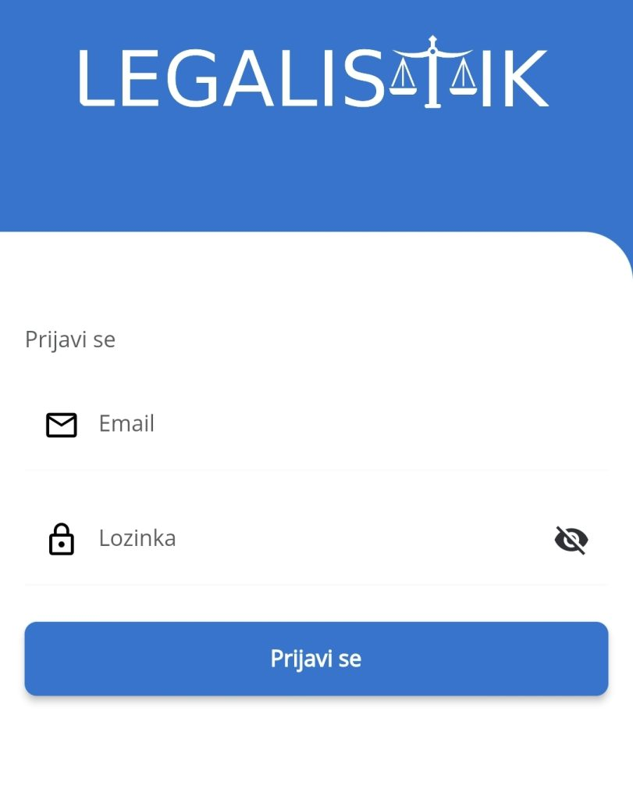
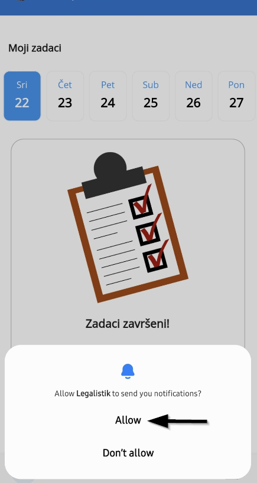
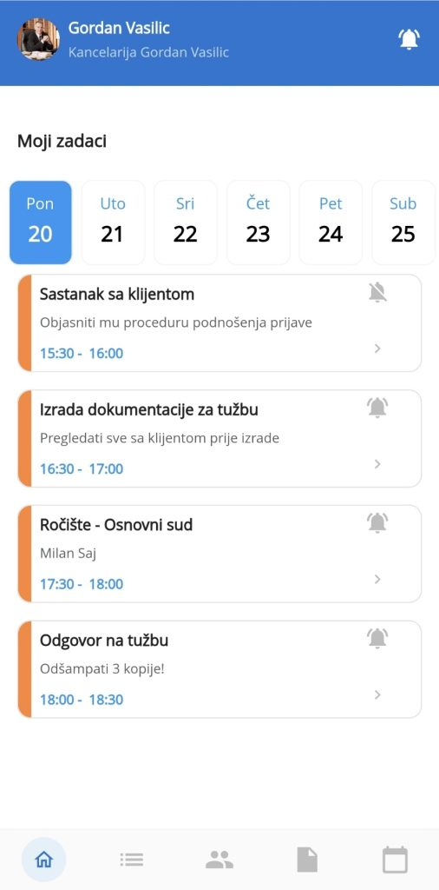
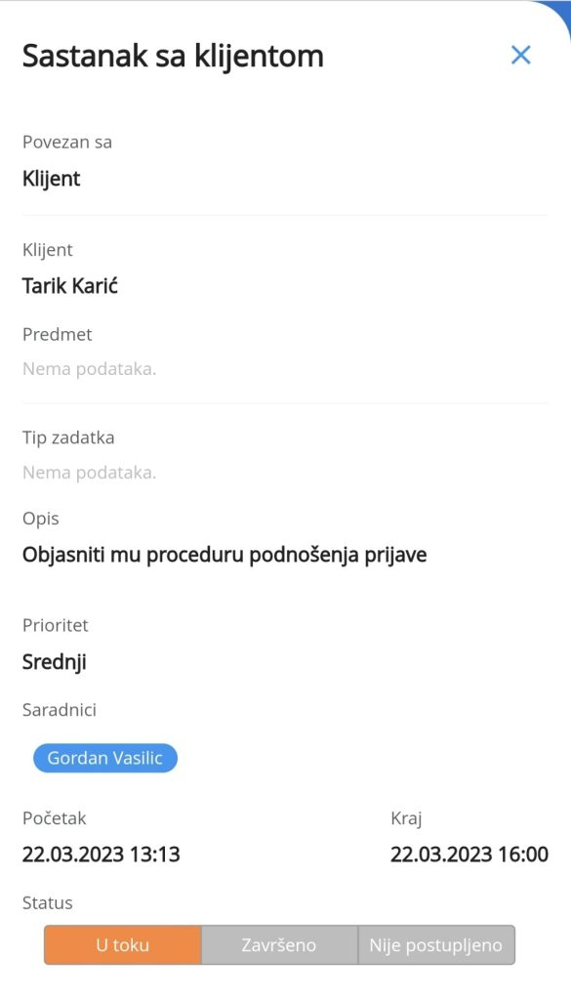
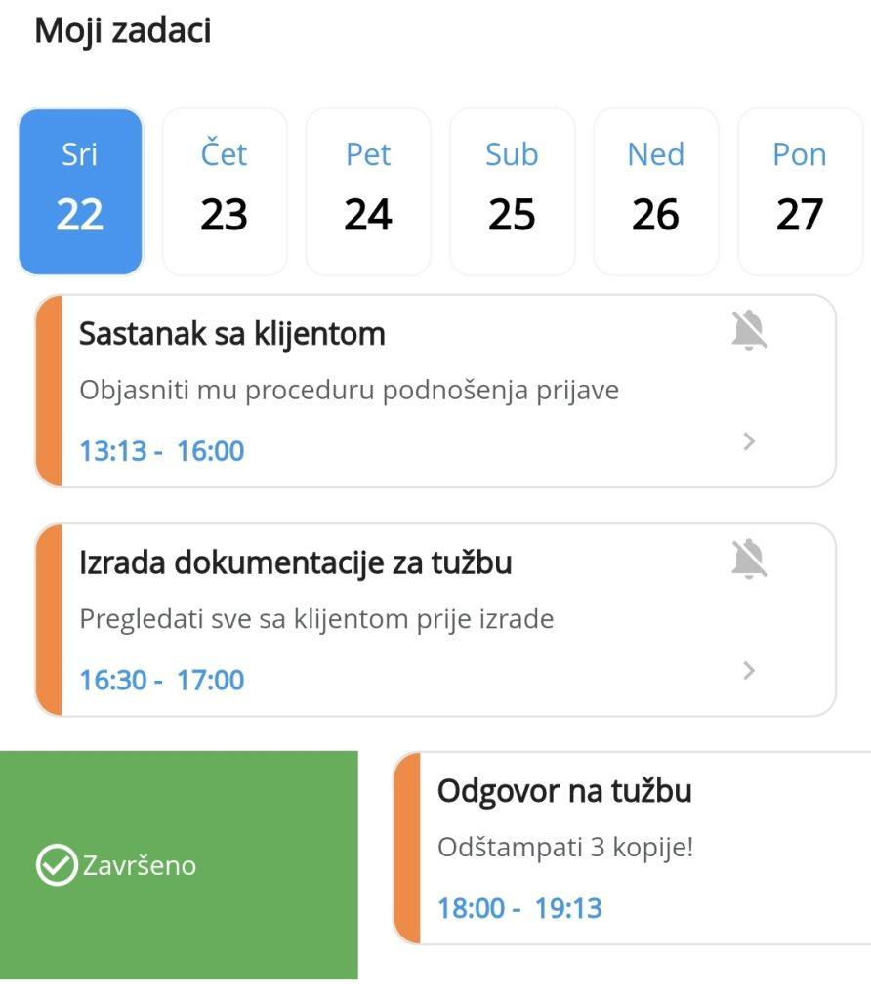
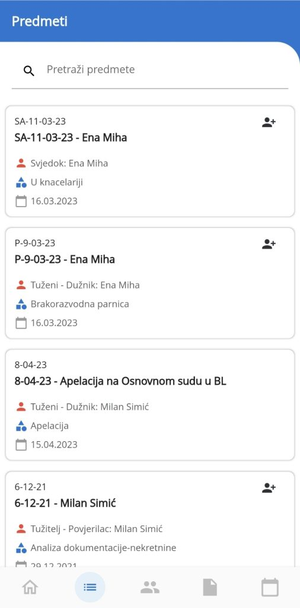
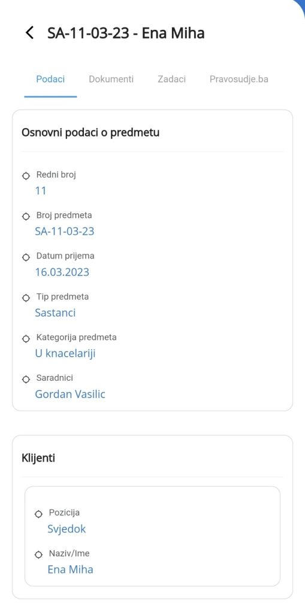
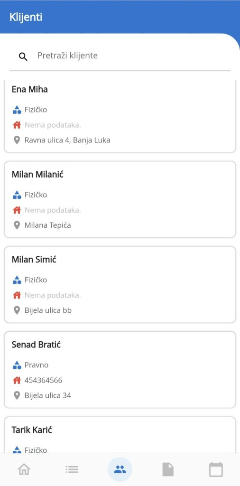
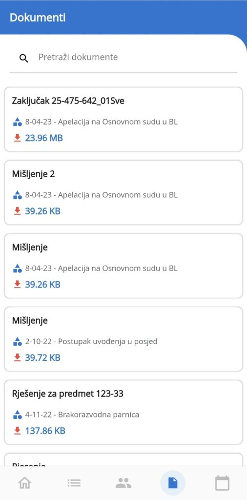

Od sada su vam svi podaci vezani za klijente, predmete, obaveze i zadatke na dohvat ruke sa mobilnom Legalistik aplikacijom. Takođe, pristup svim dokumentima sada je na dostupan sa bilo koje lokacije.
Mobilna aplikacija je trenutnoj verziji namijenjena pregledu svih informacija unutar Legalistik-a. Sledeće verzije donose mnoga unapređenja, uključujući izmjene postojećih podataka i unos novih.
Pokretanje i prijavljivanje #
Nakon što pokrenete aplikaciju na svom mobilnom uređaju, potrebno je unijeti korisničke podatke potrebne za prijavljivanje (pristupne podatke je potrebno unijeti samo prvi put!). Koristite iste podatke kao za web verziju Legalistik-a!:

Nakon što se prijavite, aplikacija će vas pitati da dopustite obavještenja na uređaju. Kliknite na Allow, da bi vam stizala obavještenja iz kalendara o obavezama i zadacima:

Nakon toga ste spremni za korištenje mobilne verzije Legalistik-a. Aplikacija je podijeljena na 5 modula ili kartica kojima se pristupa na dnu ekrana:
Moji zadaci #
Prvi modul koji se prikaže pri pokretanju aplikacije, na kojem možete vidjeti sve obaveze koje vam predstoje. Prikazane su samo one kojima je status “U toku”. Možete jednostavno prebaciti na drugi dan u budućnosti klikom na datum na vrhu liste. Za napredniji pregled po datumima, koristite modul Kalendar:

Svaki zadatak možete otvoriti da vidite sve detalje:

Na dnu otvorenog zadatka, nalaze se polja za izbor statusa, koji možete mijenjati odabirom željenog (U toku, Završeno, Nije postupljeno). Status se može mijenjati i povlačenjem lijevo (Nije postupljeno) ili desno (Završeno) zadatka u listi zadataka:

Predmeti #
Sledeći modul su Predmeti, gdje možete pretražiti listu svih predmeta u vašem Legalistik nalogu. Pretraživati možete preko polja za pretragu na vrhu liste, po nazivu ili broju predmeta, klijentu itd:

Otvaranjem željenog predmet, pristupate svim njegovim informacijama, uključujući zadatke, dokumente (kartice pri vrhu predmeta):

Klijenti #
Svi podaci o klijentima su u modulu Klijenti. Pretražite i kontaktirajte klijenta u nekoliko klikova:

Dokumenti #
Svi dokumenti sa Legalistika su u modulu Dokumenti. Pretražite i otvorite bilo koji dokument. Koriste se preglednici koji su već na mobilnom uređaju, pa ako vam nedostaju, kao na primjer za otvaranje Pdf dokumenta, instalirajte ih prethodno sa Google Play marketa:

Kalendar #
Jednostavna pretraga i pregled svih zadataka i obaveza može se uraditi u modulu Kalendar. Klikom na datum u kalendar kontroli pri vrhu ekrana, otvaraju se svi zadaci na taj datum. Uključeni su svi zadaci (U toku, Završeno i Nije postupljeno)